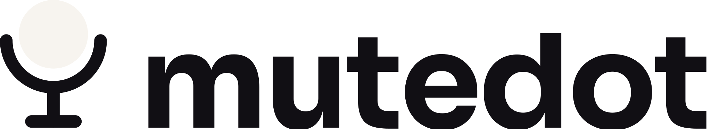

Dot
Just the dot. Quiet in a corner, obvious at a glance.
One hotkey mutes every microphone. A tiny dot shows if you're live.
One-time purchase · Windows · Linux
Demo: the MuteDot indicator shows LIVE in green. Pressing Ctrl, Shift and M flips it to MUTED in red.
Every call app has its own mute button, and none of them agree with each other or with your computer. That's how people get caught talking on a "muted" call.
MuteDot skips the apps and mutes the microphones themselves, at the system level. If a call app quietly picks a different mic, it gets silence too.
A small indicator floats above every window. Green means they can hear you. Red means they can't. Pick the size that suits your screen.
Just the dot. Quiet in a corner, obvious at a glance.
The dot plus a word, so there's no second-guessing.
A big badge for streams, podcasts and anyone who forgets.

Everything a mute button should have done in the first place.
Hold a key to talk while muted. Let go and you're muted again.
A falling chime when you mute, a rising one when you're live. No looking required.
Press the mute button on your headset or flip it in system settings. MuteDot catches up within half a second.
Lock the indicator and clicks pass straight through to whatever's underneath.
Out of the way in the tray, and it starts when you log in.
mutedot --toggle, --mute, --unmute and --status for Stream Deck and custom shortcuts.
Zoom · Microsoft Teams · Google Meet · Discord · Slack · OBS · and anything else that uses a mic.
It mutes the mic itself, so there's nothing for an app to ignore.
No subscription and no trial. The 30-day money-back guarantee has you covered instead.
MuteDot
$6once
Windows 10/11 · Linux (X11 and Wayland)
Yes. MuteDot mutes the microphone itself, so every app hears silence, including ones that aren't on that list.
Let it. The app's own button doesn't know about MuteDot, but nothing gets through. Trust the dot.
No. There's no account, no license key and no telemetry. It works completely offline.
All of your own. Buy once, download, and install it on every computer you use.
Yes, on both X11 and Wayland. Wayland doesn't let apps grab global keys, so you bind mutedot --toggle to a key in your desktop's settings. Push-to-talk isn't available on Wayland.
Yes. Within 30 days, no questions asked. See the refund policy.
No. The 30-day money-back guarantee covers you instead. If MuteDot isn't for you, you get your $6 back.